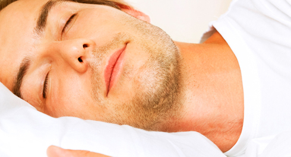

Насколько важен сон для получения желаемых результатов? Возьмем для примера мобильный телефон, который весь день работает, да ещё и с дополнительными функциями: WIFI, GPS, Интернет и так далее. Даже у самых современных моделей зарядки хватит при таком использовании не больше, чем на 12 часов. А что потом? Потом нужно ставить телефон на ночь на подзарядку. Так вот, с человеком ситуация абсолютно такая же! И если не подзаряжать себя регулярно, то и полноценно работать не получится!

Сон — это ключевая составляющая отдыха. Во время сна в организме происходит восстановление многих жизненно важных функций, в особенности тех, которые связаны с нервной системой (в частности реорганизуются нейронные сети и нервные центры, управляющие работой метаболизма и гормональной системой). И хотя многие считают, что сон — это пассивный процесс, потому что в это время расслабляется мускулатура, замедляется сердечный ритм и дыхание становится более редким, однако параллельно с этим усиливается работа желез внутренней секреции и активизируется ряд анаболических (синтезирующих) процессов. Однако все это происходит только в том случае, если человек высыпается. Недостаток же сна приводит к увеличению так называемых стрессовых гормонов (например, кортизола) и усиливает процессы катаболизма (разрушения).
Кроме того, недостаток сна отрицательно сказывается на скорости реакции на внешние раздражители, уровне активности и когнитивных способностях человека. Особенно интересно то, что это происходит незаметно для самого человека, что было подтверждено в ходе экспериментов. Поэтому для того, чтобы выкладываться по максимуму в течение дня, критически важно давать своему организму достаточное количество сна.
Но что значит "достаточное"? Распространено мнение, что взрослому человеку нужно спать не менее 8 часов, а ребенку — не менее 10? Можете забыть эту информацию, потому что она не соответствует действительности. Так что, когда в следующий раз кто-нибудь скажет, что спит по 6-7 часов в день и высыпается, не нужно считать его ненормальным. Просто он смог эффективно организовать свой распорядок дня и настроить режим сна.
Фазы сна
Когда речь заходит о сне, то нужно первым делом рассказать о том, что его можно разделить на несколько ярко выраженных фаз:
Фаза №1: Легкая дрема. Наверняка вам знакомо чувство, когда вы сидите перед компьютером, а глаза сами собой слипаются, или когда в университете слушаете монотонный и убаюкивающий рассказ лектора, а когда приходите в себя, понимаете, что прошло уже 5 минут.
Фаза №2: Неглубокий сон. Это уже полноценный сон, характеризующийся редкими всплесками мозговой активности.
Фаза №3: Глубокий сон. Именно в этой фазе сна мозг и организм расслабляется и происходит самое интенсивное восстановление ресурсов организма, поэтому она самая важная. Также она характеризуется практически полным отсутствием мозговой активности, снижением частоты сердечных сокращений и падением температуры тела.
Фаза №4: Быстрый сон. Именно в этой фазе сна мозг и организм расслабляется и происходит самое интенсивное восстановление ресурсов организма, поэтому она самая важная. Также она характеризуется практически полным отсутствием мозговой активности, снижением частоты сердечных сокращений и падением температуры тела.
Нужно отметить, что этот четырех фазный цикл происходит не один, а несколько раз за время сна. При этом, с каждым последующим циклом, сокращается продолжительность третьей фазы и увеличивается продолжительность остальных. При этом в самом первом цикле именно третья фаза является самой продолжительной.
Мелатонин
Если в двух словах описать его влияние на наш организм, то чем больше его выделяется, тем больше нам хочется спать. При этом активно он начинает выделяться в условиях, когда наши глаза испытывают недостаток света. Такой вот заложенный природой механизм, для того, чтобы нам было проще засыпать, когда наступает ночь. Однако в условиях наличия поблизости яркого источника света этот гормон разрушается, из-за чего жители мегаполисов практически повально страдают от расстройств сна.
Отсюда следует простой вывод — чем больше у вас будет ГЛУБОКОГО СНА, и чем ГЛУБЖЕ он будет, тем более отдохнувшими и восстановившимися вы будете. При этом нужно помнить о двойственной природе физических состояний, о которой мы уже рассказывали в одном из предыдущих инфопостов. Если в фазе глубокого сна организм остывает и замедляет свои процессы, то, с другой стороны, вы можете помочь ему перейти в эту фазу скорее, если будете следовать нескольким простым советам:
Если сами начнете понижать свою температуру (например, проветрив хорошенько помещение перед сном, чтобы ложиться спать в прохладную кровать) и замедлять сердечный ритм (по этой причине не рекомендуют заниматься спортом незадолго перед сном).
Советы для тех, у кого бывают проблемы со сном и засыпанием
1. Воспитайте в себе привычку ложиться спать в одно и тоже время. Поначалу может быть тяжело и придется себя заставлять, но со временем сила привычки сама будет вас укладывать.
2. Используйте кровать только для сна. Лучше всего создать у организма устойчивую ассоциацию с кроватью, как с местом для сна и отдыха. Поэтому не стоит превращать её в домашний офис, читать на кровать и т.д.
3. Избавьтесь от лишних мыслей. Если вы часто ловите себя на том, что не можете заснуть, потому что мозг продолжает о чем-то думать, то уделите больше внимания тому, что делаете за 30-60 минут до сна. Уберите из этого времени все активности, которые могут будоражить мозг (работу на компьютере, просмотр телевизора, игру на смартфоне, собирание кубика Рубика).
4. Не поднимайте температуру тела. Поскольку самое начало сна характеризуется снижением активности и температуры организма, вы можете облегчить процесс перехода ко сну, если хорошенько проветрите комнату (на прохладной кровати легче заснуть), сами начнете вести себя более спокойно, послушаете какую-нибудь расслабляющую музыку, и т.д.
5. Ложитесь спать в прохладной комнате. Это облегчит процесс перехода организма в состояние глубокого сна и положительно скажется на процессах восстановления. Естественно, температура должна быть комфортной, поэтому не нужно себя морозить.
6. Ложитесь спать в полной темноте. Как уже было сказано выше, наличие источника света, даже такого простого, как фонарь за окном, будет мешать вам заснуть, потому что будет препятствовать выработке меланина. Поэтому шторы с эффектом blackout вам в помощь.